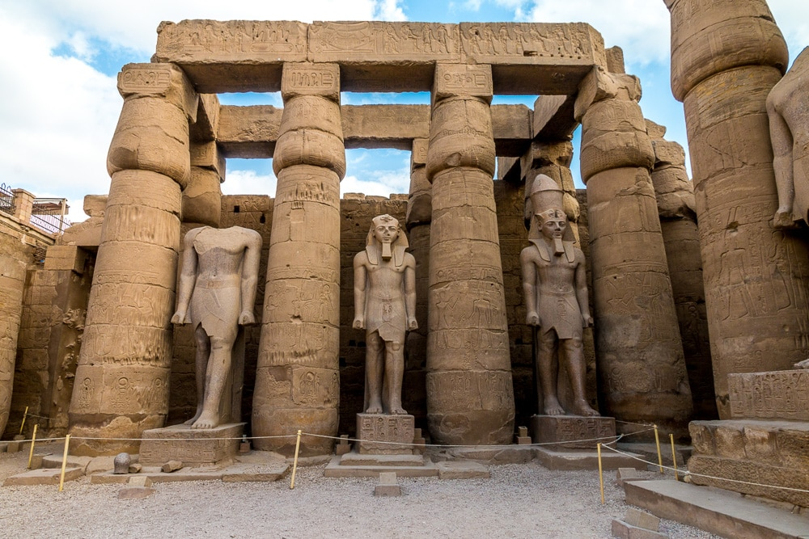
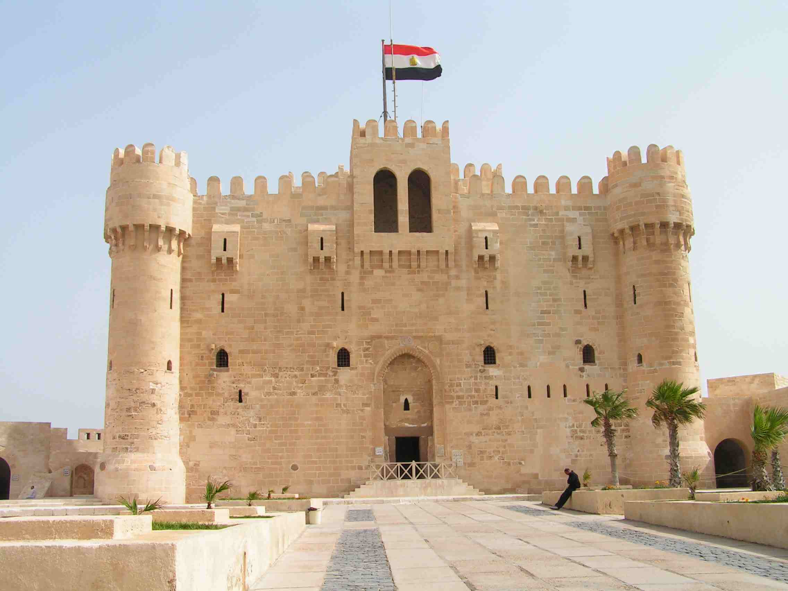
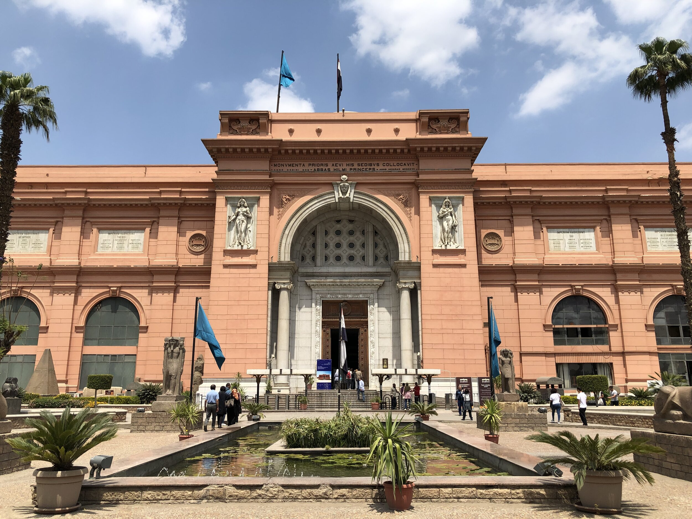

The Pyramids |
 |
|
The Giza Pyramids, built to endure an eternity, have done just that. The monumental tombs are relics of Egypt's Old Kingdom era and were constructed some 4,500 years ago. |
||
|  |
Luxor Temple |
|
The Luxor Temple was constructed of sandstone blocks from Nubia. The temple is surrounded by mud-brick walls which symbolize the separation between the world and the sacred realm of the gods. The Temple’s design during the New Kingdom exhibited a set of common design features in the construction of the temple. |
||
Qaitbay Fort |
 | |
Qaitbay fort is a magical defensive fortress was built in the 15th century and it is located on the coast of the Mediterranean Sea in Alexandria, on the eastern side of the northern tip of Pharos Island at the mouth of the Eastern Harbour, and was built by Sultan Al-Ashraf Sayf al-Din Qa'it Bay in 1477 A.D |
||
|  |
Egyptian Museum |
|
The Egyptian Museum is the oldest archaeological museum in the Middle East, and houses the largest collection of Pharaonic antiquities in the world. The museum displays an extensive collection spanning from the Predynastic Period to the Greco-Roman Era. |
||
Valley of the Kings |
 |
|
The Valley of the Kings is long narrow defile just west of the Nile River in Upper Egypt. It was part of the ancient city of Thebes and was the burial site of almost all the kings (pharaohs) of the 18th, 19th, and 20th dynasties. |
||
For more info, Contact us at: aelganai@uwo.ca |
||